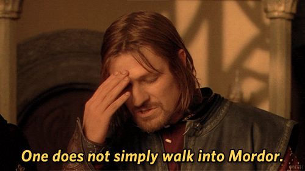
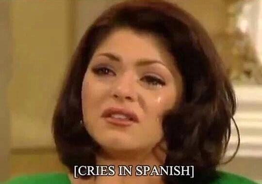

Good news! Recently, many curve-flattening countries began opening up their borders to certain international travelers—but not, alas, to citizens of the United States.
… *cries in American*
In a socially distant world, online life for many people has become normal life. How we express ourselves on the internet has become more important as we lose the social signals of body language and facial expressions. Without handshakes, hugs, and in-person social rituals, such as public gatherings and assemblies, how do we socialize and bond with each other? How can we convey emotionally what our lives have become in this pandemic era without having to explain it all through painstakingly literal language?
For many internet users, one way to actively engage in a wider community is to play with words—through seizing the memes of production, as it were. If bonding through figurative language sounds similar to the work of idioms, it’s because good old idioms and memes are somewhat related, in the way we cognitively process their words to get from their literal meaning to their figurative one. Idioms are purportedly well-worn clichés that usually can’t be altered without losing their meaning, but the remarkable thing about internet memes is that without constant mutation through wordplay, they become, ahem, meme-ingless—less successful linguistic fads. Stagnant, unfashionable memes eventually go extinct.
There are, of course, other ways of conveying simple emotions and accompanying gestures online. As Humphrey Bogart never said, we’ll always have emojis. True, emojis and emoticons let us express less complicated feelings, but they are just one type of affective communication—perhaps a more limited kind. (Even if people can get pretty creative, strings of emojis can be hard to process and decode.)
But how can we better express deeper or more complex states of emotions online?
Like emojis, the classic reaction gifs of split-second slices of life taken from popular culture have long been used as virtual gestures to signal other kinds of expressions—a kind of knowing, meta-emotional state that users can pass on just as they are or attach other, similar reactions to them. The more common reaction gifs can then later take on verbal forms that reference them without the need for the gif itself, such as “facepalm†and “side-eye.”
While we’ve always had conventions for describing our actions and reactions online linguistically, such as *eats popcorn*, psychologist Sam Glucksberg suggests that we can process literal meanings in the words that are present while simultaneously conveying figurative meanings by alluding to words that are absent. From their literal meaning, the words “eats popcorn†can come to refer to observing drama or gossip. Since many already associate “eating popcorn†with entertainment, using the words in context can stand in for what might have been depicted wordlessly with images.
The chaotic creativity of remixed internet memes and the new linguistic structures that rapidly evolve from them allow us to express certain states of mind and have others immediately get it and respond in kind. This has been called an “asynchronous, massively multi-person conversation.†Meme makers and sharers participate in this conversation to bond and maintain social cohesion through humor and wordplay—even shared with countless millions of complete strangers.
Memes aren’t shared because people are forced to, or because humans are just by their nature passive “copying machines.†They’re shared, as James Willmore and Darryl Hocking argue, following the linguist Ronald Carter, because people actively engage and delight in “the creative, nonliteral, playful language of everyday conversation,†which “is not merely ornamental but socially determined.†We don’t play with language for pure pleasure alone, but to convey identity, to show belonging, to show we’re on the same page as others. This creativity in producing memes, playing off language as in ordinary conversation, is democratic, “the common property of all human beings.†While images are important to the origins of internet memes, they often enter the mainstream in linguistic form, from such wordplay as punning, morphological inventiveness, reformulating, or repeating patterns and figures of speech.
For instance, take the emerging linguistic meme with the phrasal template “X in Y,†such as “cries in American,†“laughs in Canadian,†or, in its original form, “cries in Spanish.†This meme, which you can’t take literally in the same way as “eating popcorn,†has evolved as one kind of wry reaction to certain situations (such as the state of international travel during a pandemic). Somehow, through allusion, the meme can convey far more complex emotional information than its simple linguistic structure might suggest. In fact, “a central characteristic of much memetic humor is sociocritical commentary†that is not often literally spelled out.
Internet memes are popularly image macros—often originating from weird or amusing snippets of pop culture, with accompanying humorous text or catchphrases riffing on the theme of the meme. Those textual elements can take on various forms, depending on the in-joke, such as initialisms or set catchphrases. But many of these memes set up phrasal templates that can be reformulated, such as the one that’s probably Sean Bean’s albatross, “One does not simply X into Y”:

Linguist Geoffrey Pullum coined the term “snowclones†to refer to phrasal structures with slots that can be filled in, such as:
“If Eskimos have N words for snow, X surely have Y words for Z. In space, no one can hear you X. X is the new Y.”
If snowclones have been more like mass-produced linguistic clichés, such as “If Eskimos have dozens of words for snow, Germans have as many for bureaucracy,†it’s the absurd context of ever-mutating memes, where almost anything goes as long as a familiar enough structure is maintained, that can really turn a cliché on its head. The original source meme has to have had something notable about it for it to have become popular in the first place.
The “cries in Spanish†meme, for instance, began as a humorous observation on the nonsense of subtitles unnecessarily explaining a universally human act of emotion—crying—in terms of a particular language, nationality, or personal identity.

Successful memes are virally shared and copied, but unlike your classic reaction gifs, they can often go on to take a life of their own. Most importantly, memes aren’t static; they can mutate as they’re copied, as meme sharers remix their elements, particularly riffing on the text to create new layers of referential humor while keeping the soul of the original intact. Earlier parodies of the meme, like “Dies in Spanish,†were straightforward, descriptive plays on subtitles, since dying is also a universal human condition that needs no linguistic qualification.
As variations on the meme become more popular, the relevant phrasal structure is used and reused, without the images. For “Cries in Spanish†memes, the reference to a language or nationality is humorous and can’t really be taken literally, which means that the phrase evolved figuratively: not merely referring to parodies of subtitles, but becoming affective commentary on a person’s state or identity. In context, meme readers can understand and respond. One Reddit thread about extreme healthcare costs, for example, riffs on the same phrasal structure “cries in American†to refer to the abject state of medical insurance in the U.S. (“Cries in British in the future†responds with anxiety about expected cuts to universal healthcare the U.K.)
Expressing yourself through the medium of the absurdist humor of internet memes can seem silly to many people—but it’s a silliness and playfulness that’s often surprisingly bundled together with astute observations about the human condition, or our assumptions about the world—perhaps as we laugh or cry ruefully in ongoing events of 2020.